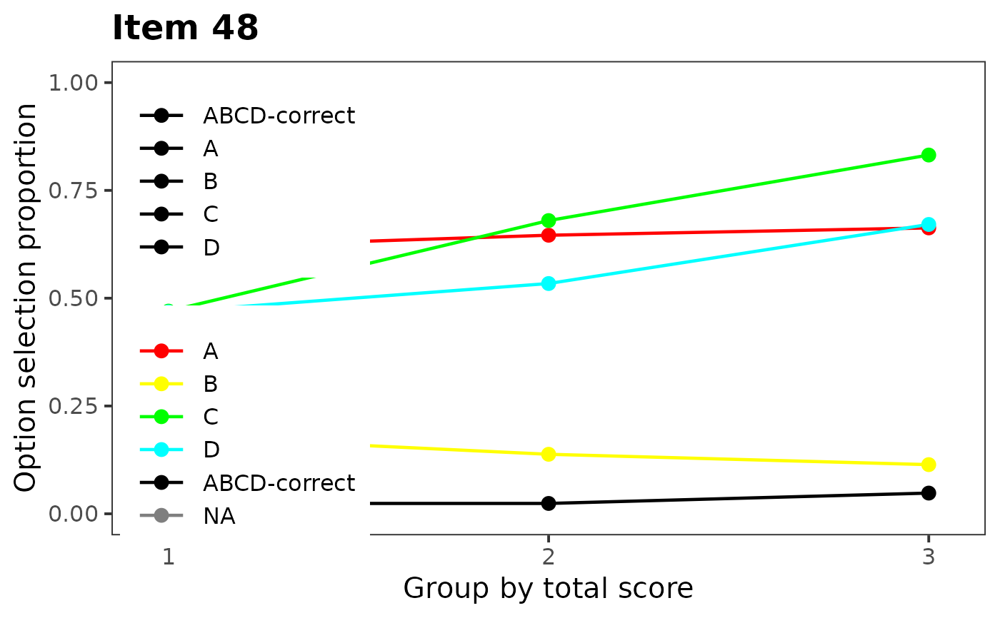
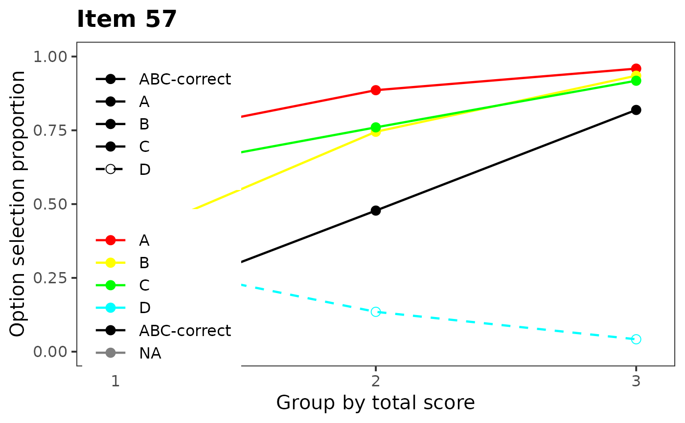
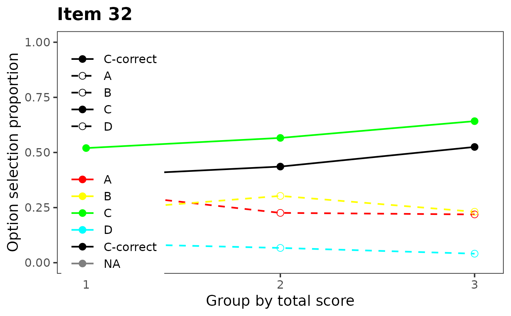

Plots graphical representation of item distractor analysis with proportions and optional number of groups.
plotDistractorAnalysis( Data, key, num.groups = 3, item = 1, item.name, multiple.answers = TRUE, criterion = NULL, crit.discrete = FALSE, cut.points, data, matching, match.discrete )
| Data | character: data matrix or data.frame with rows representing unscored item response from a multiple-choice test and columns corresponding to the items. |
|---|---|
| key | character: answer key for the items. The |
| num.groups | numeric: number of groups to which are the respondents splitted. |
| item | numeric: the number of the item to be plotted. |
| item.name | character: the name of the item. |
| multiple.answers | logical: should be all combinations plotted (default) or should be answers splitted into distractors. See Details. |
| criterion | numeric: numeric vector. If not provided, total score is calculated and distractor analysis is performed based on it. |
| crit.discrete | logical: is |
| cut.points | numeric: numeric vector specifying cut points of
|
| data | deprecated. Use argument |
| matching | deprecated. Use argument |
| match.discrete | deprecated. Use argument |
This function is a graphical representation of the
DistractorAnalysis function. In case that no criterion
is provided, the scores are calculated using the item Data and
key. The respondents are by default split into the
num.groups-quantiles and the proportions of respondents in each
quantile are displayed with respect to their answers. In case that
criterion is discrete (crit.discrete = TRUE),
criterion is split based on its unique levels. Other cut points can
be specified via cut.points argument.
If multiple.answers = TRUE (default) all reported combinations of
answers are plotted. If multiple.answers = FALSE all combinations
are split into distractors and only these are then plotted with correct
combination.
Adela Hladka
Institute of Computer Science of the Czech Academy of Sciences
hladka@cs.cas.cz
Patricia Martinkova
Institute of Computer Science of the Czech Academy of Sciences
martinkova@cs.cas.cz
# loading 100-item medical admission test datasets data(dataMedical, dataMedicaltest, dataMedicalkey) data <- dataMedicaltest[, 1:100] dataBin <- dataMedical[, 1:100] key <- unlist(dataMedicalkey) # distractor plot for items 48, 57 and 32 displaying distractors only plotDistractorAnalysis(data, key, item = 48, multiple.answers = FALSE)# correct answer B does not function well plotDistractorAnalysis(data, key, item = 57, multiple.answers = FALSE)# all options function well, thus the whole item discriminates well plotDistractorAnalysis(data, key, item = 32, multiple.answers = FALSE)# functions well, thus the whole item discriminates well if (FALSE) { # distractor plot for items 48, 57 and 32 displaying all combinations plotDistractorAnalysis(data, key, item = 48) plotDistractorAnalysis(data, key, item = 57) plotDistractorAnalysis(data, key, item = 32) # distractor plot for item 57 with all combinations and 6 groups plotDistractorAnalysis(data, key, item = 57, num.group = 6) # distractor plot for item 57 using specified criterion and key option criterion <- round(rowSums(dataBin), -1) plotDistractorAnalysis(data, key, item = 57, criterion = criterion) # distractor plot for item 57 using specified criterion without key option plotDistractorAnalysis(data, item = 57, criterion = criterion) # distractor plot for item 57 using discrete criterion plotDistractorAnalysis(data, key, item = 57, criterion = criterion, crit.discrete = TRUE ) # distractor plot for item 57 using groups specified by cut.points plotDistractorAnalysis(data, key, item = 57, cut.points = seq(10, 100, 10)) }